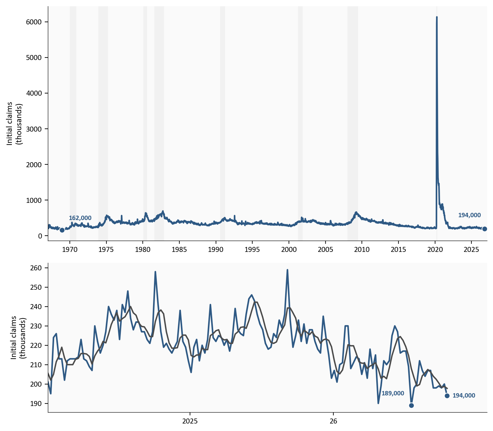
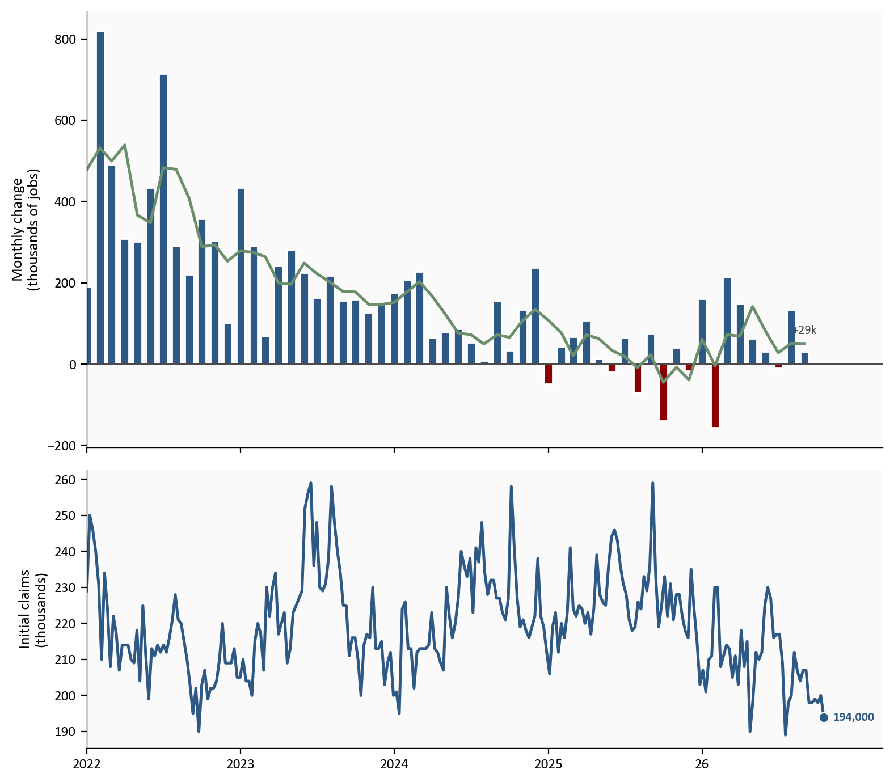
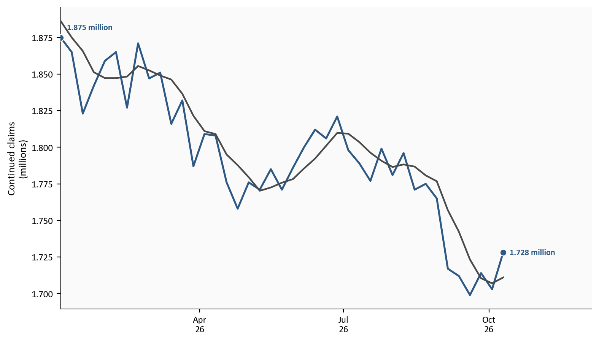

Initial claims
194,000
week ended 10/17/26
Continued claims
1.7M
week ended 10/10/26
September payrolls
+29,000
10/2/26
Unemployment rate
4.2%
September 26
Department of Labor weekly claims and BLS Employment Situation | 10/22/26
Yoram Gilboa
October 25, 2026
Initial claims, new filings for unemployment insurance, were 194,000 in the week ended 10/17/26. Nonfarm payrolls, the jobs on employer payrolls outside farm work, rose 29,000 in September 26. The two prints answer different questions. A filing count is not the net change in jobs.
Continued claims, the people still on unemployment insurance after a filing, were 1.728 million in the week ended 10/10/26. This year that stock reached 1.875 million in the week ended 1/3/26. The latest week is up from the week before it, and it is still below that high.
The complete pipeline is included with this post:
scripts/01_fetch_data.py checks the committed snapshots and does not download. Weekly claims are the 10/22/26 Department of Labor vintage. Payrolls, unemployment, participation, and earnings are the 10/2/26 Employment Situation.scripts/02_clean_data.py calculates the monthly payroll change, the three-month average of those changes, and the earnings year rate. Charts only plot those columns.scripts/04_compute_stats.py writes every prose and card value to stats/summary_stats.json.Run the scripts in that order from this post’s folder, then render index.qmd. pandas handles the tables and matplotlib draws the figures. The claims source is the Department of Labor weekly release. The payroll source is the archived Employment Situation.
Initial claims and continued claims in the charts are seasonally adjusted. The chart uses the revised level of the prior week. The advance figure quoted in the text is not a separate point. The monthly payroll change is a difference in employment levels, in thousands of jobs. The three-month line is the average of the last three monthly changes, not an annualized rate. A claims week is shaded when its Saturday falls in an NBER recession month.
Department of Labor weekly claims and BLS Employment Situation | 10/22/26
The four-week average is the Department of Labor’s average of the last four weeks of initial claims. It was 197,750 in the week ended 10/17/26, down 1,000 from the previous week’s revised average. The week ended 10/10/26 was revised up by 1,000, from 199,000 to 200,000. The latest week’s decline of 6,000 is measured from that revised level.
The upper panel is the full sample of weekly initial claims, beginning 1/7/1967, with recession months shaded. The lower panel is the recent window. There the blue line is weekly initial claims and the gray line is the four-week average.
# Full sample on top, recent window below. Levels are plotted in thousands.
# Missing weeks stay missing so a gap is not closed.
claims = pd.read_csv(CLEAN_DIR / "claims_weekly.csv", index_col="date", parse_dates=True).sort_index()
recessions = pd.read_csv(CLEAN_DIR / "recessions.csv", index_col="date", parse_dates=True).sort_index()
icsa = claims["initial_claims"]
icsa_k = icsa / 1000.0
recent = claims.loc["2024-01-01":]
recent_k = recent["initial_claims"] / 1000.0
recent_avg_k = recent["claims_4wk_avg"] / 1000.0
fig, axes = plt.subplots(2, 1, figsize=(8.0, 7.0), gridspec_kw={"height_ratios": [2.2, 1.4]})
rec_months = set(recessions.index[recessions["usrec"] == 1].to_period("M"))
in_rec = [stamp.to_period("M") in rec_months for stamp in icsa.index]
start = None
prev = None
for stamp, flag in zip(icsa.index, in_rec):
if flag and start is None:
start = stamp
if start is not None and not flag:
axes[0].axvspan(start, prev, color=COLORS["recession"], alpha=0.08, linewidth=0)
start = None
prev = stamp
if start is not None:
axes[0].axvspan(start, icsa.index[-1], color=COLORS["recession"], alpha=0.08, linewidth=0)
axes[0].plot(icsa.index, icsa_k, color=COLORS["primary"], linewidth=1.8)
record_stamp = icsa.idxmin()
latest_stamp = icsa.dropna().index[-1]
for stamp, offset, ha in ((record_stamp, (8, 10), "left"), (latest_stamp, (-4, 12), "right")):
level = float(icsa.loc[stamp])
axes[0].scatter(
stamp, level / 1000.0, s=40, color=COLORS["primary"], zorder=5, edgecolors="white", linewidth=0.8
)
axes[0].annotate(
f"{level:,.0f}",
xy=(stamp, level / 1000.0),
xytext=offset,
textcoords="offset points",
color=COLORS["primary"],
fontsize=8,
fontweight="bold",
ha=ha,
va="bottom",
)
axes[0].set_ylabel("Initial claims\n(thousands)")
axes[0].set_xlim(icsa.index[0], latest_stamp + pd.Timedelta(days=120))
year_ticks(axes[0])
axes[1].plot(recent.index, recent_k, color=COLORS["primary"], linewidth=1.8)
axes[1].plot(recent.index, recent_avg_k, color=COLORS["neutral"], linewidth=1.6)
low_stamp = recent["initial_claims"].idxmin()
end_stamp = recent["initial_claims"].dropna().index[-1]
for stamp, offset, ha in ((low_stamp, (-8, 10), "right"), (end_stamp, (6, 0), "left")):
level = float(recent.loc[stamp, "initial_claims"])
axes[1].scatter(
stamp, level / 1000.0, s=40, color=COLORS["primary"], zorder=5, edgecolors="white", linewidth=0.8
)
axes[1].annotate(
f"{level:,.0f}",
xy=(stamp, level / 1000.0),
xytext=offset,
textcoords="offset points",
color=COLORS["primary"],
fontsize=8,
fontweight="bold",
ha=ha,
va="bottom" if offset[1] else "center",
)
axes[1].set_ylabel("Initial claims\n(thousands)")
year_span_ticks(axes[1], recent.index)
extend_xlim(axes[1], recent.index, 0.1)
plt.tight_layout()
fig.savefig(IMG_DIR / "claims-history.png", dpi=150, bbox_inches="tight")
Source: Department of Labor initial claims via FRED ICSA and IC4WSA; recession months from FRED USREC.
The lowest week in the sample was 162,000, in the week ended 11/30/1968. The lowest week of 1969 was 177,000, in the week ended 4/26/1969. Both are below the latest week. Since 1970, 4 weeks have been at or below 194,000, and the latest week is one of them. The lowest of those weeks was 189,000 in the week ended 7/18/26.
| Week ended | Initial claims |
|---|---|
| 9/24/2022 | 190,000 |
| 4/25/26 | 190,000 |
| 7/18/26 | 189,000 |
| 10/17/26 | 194,000 |
The full sample has 3,120 weeks, and 62 of them were at or below the latest level. Most of that longer count sits in the late 1960s, so this post uses the since-1970 count.
The bars below are the monthly change in nonfarm payrolls. The green line is the average of the last three of those monthly changes. The lower panel is weekly initial claims. Payrolls count a net change in jobs. Claims count new filings. The figure keeps those measurements on separate panels.
# Monthly changes and the three-month average are columns on the clean file.
# This cell only plots them. Weekly claims stay on their own calendar.
payrolls = pd.read_csv(CLEAN_DIR / "payrolls_monthly.csv", index_col="date", parse_dates=True).sort_index()
claims = pd.read_csv(CLEAN_DIR / "claims_weekly.csv", index_col="date", parse_dates=True).sort_index()
pay = payrolls.loc["2022-01-01":]
weekly = claims.loc["2022-01-01":, "initial_claims"]
fig, axes = plt.subplots(2, 1, figsize=(8.0, 7.0), sharex=True, gridspec_kw={"height_ratios": [2.2, 1.4]})
bar_colors = [COLORS["primary"] if value >= 0 else COLORS["accent"] for value in pay["payems_change"].fillna(0)]
axes[0].axhline(0, color=COLORS["neutral"], linewidth=0.8)
axes[0].bar(pay.index, pay["payems_change"], width=20, color=bar_colors, edgecolor="white")
axes[0].plot(pay.index, pay["payems_change_3m"], color=COLORS["secondary"], linewidth=1.8)
last_pay = pay["payems_change"].dropna().index[-1]
last_value = float(pay.loc[last_pay, "payems_change"])
span = float(pay["payems_change"].max() - pay["payems_change"].min())
axes[0].text(
last_pay,
last_value + span * 0.04,
f"{last_value:+.0f}k",
color=COLORS["neutral"],
fontsize=8,
ha="center",
va="bottom",
)
axes[0].set_ylabel("Monthly change\n(thousands of jobs)")
axes[1].plot(weekly.index, weekly / 1000.0, color=COLORS["primary"], linewidth=1.8)
end = weekly.dropna().index[-1]
end_level = float(weekly.loc[end])
axes[1].scatter(end, end_level / 1000.0, s=40, color=COLORS["primary"], zorder=5, edgecolors="white", linewidth=0.8)
axes[1].annotate(
f"{end_level:,.0f}",
xy=(end, end_level / 1000.0),
xytext=(6, 0),
textcoords="offset points",
color=COLORS["primary"],
fontsize=8,
fontweight="bold",
va="center",
)
axes[1].set_ylabel("Initial claims\n(thousands)")
year_span_ticks(axes[1], weekly.dropna().index)
extend_xlim(axes[1], weekly.dropna().index, 0.08)
plt.tight_layout()
fig.savefig(IMG_DIR / "payrolls-claims.png", dpi=150, bbox_inches="tight")
Payrolls rose 29,000 in September 26. The three-month average of the monthly change was 51,000.
The panel above does not show the full payroll series. Leave out recession months, and leave out the 12 months after each recession ended. In the months that remain, back to February 1967, the median monthly change was 205,000. 50 of 534 earlier months in that set had a change as low as September’s or lower. 33 of 532 had a three-month average as low as September’s or lower. That is a comparison with other non-recession months. It does not say September was a recession.
The October employment situation is dated 11/6/26, and that print is not on the figure. BLS described the September change as little changed. The approximate 90 percent confidence interval is plus or minus 122,000, so the reported estimate is not statistically distinguishable from zero. The interval describes the monthly estimate. It does not test whether September differed from August. The 10/2/26 release also revised July and August down by a combined 60,000.
The unemployment rate is not a line on this figure. It edged from 4.1 percent to 4.2 percent. The labor force participation rate is also prose only. It rose from 61.6 percent to 61.8 percent, so the small payroll gain is not a story about people leaving the labor force. Average hourly earnings, the usual hourly pay of private-sector workers, are prose only as well. They rose 3.0 percent over the year.
Low-hire, low-fire, as used here, means few new filings and a small net change in jobs. It is not a published count of hires. September hires are not in this post. That count arrives with the Job Openings and Labor Turnover Survey on 11/3/26.
Continued claims are people who remain on unemployment insurance. They are not the week’s new filings, and they are not nonfarm payrolls. In the figure the blue line is continued claims and the gray line is the four-week average of continued claims. The insured unemployment rate, continued claims as a percent of jobs covered by unemployment insurance, is not a line on the figure. It was 1.1 percent in the week ended 10/3/26 and 1.1 percent in the week ended 10/10/26.
# Continued claims end one week before the latest initial-claims week. Keep that end date.
claims = pd.read_csv(CLEAN_DIR / "claims_weekly.csv", index_col="date", parse_dates=True).sort_index()
window = claims.loc["2026-01-01":"2026-10-10", ["continuing_claims", "continuing_4wk_avg"]]
fig, ax = plt.subplots(figsize=(8.0, 4.6))
ax.plot(window.index, window["continuing_claims"] / 1_000_000, color=COLORS["primary"], linewidth=1.8)
ax.plot(window.index, window["continuing_4wk_avg"] / 1_000_000, color=COLORS["neutral"], linewidth=1.6)
level = window["continuing_claims"].dropna()
end = level.index[-1]
end_value = float(level.loc[end])
high = level.idxmax()
high_value = float(level.loc[high])
ax.scatter(end, end_value / 1_000_000, s=40, color=COLORS["primary"], zorder=5, edgecolors="white", linewidth=0.8)
ax.annotate(
f"{end_value / 1_000_000:.3f} million",
xy=(end, end_value / 1_000_000),
xytext=(6, 0),
textcoords="offset points",
color=COLORS["primary"],
fontsize=8,
fontweight="bold",
va="center",
)
ax.scatter(high, high_value / 1_000_000, s=40, color=COLORS["primary"], zorder=5, edgecolors="white", linewidth=0.8)
ax.annotate(
f"{high_value / 1_000_000:.3f} million",
xy=(high, high_value / 1_000_000),
xytext=(6, 6),
textcoords="offset points",
color=COLORS["primary"],
fontsize=8,
fontweight="bold",
va="bottom",
)
ax.set_ylabel("Continued claims\n(millions)")
quarter_ticks(ax)
extend_xlim(ax, window.index, 0.2)
plt.tight_layout()
fig.savefig(IMG_DIR / "continuing-claims.png", dpi=150, bbox_inches="tight")
The stock was 1.728 million in the week ended 10/10/26, up 25,000 from the week ended 10/3/26. The high for the year was 1.875 million in the week ended 1/3/26. The low for the year was 1.699 million in the week ended 9/19/26. The week ended 8/29/26 was 1.765 million, still above the latest reading. A one-week increase inside that range is not a new high. It is also not the October survey week’s continued claims. Those are released on 10/29/26.
The payroll and household surveys refer to the week, or the pay period, that includes the 12th of the month. In October that date is 10/12/26. The initial-claims week that includes it ended 10/17/26, the same week as the latest claims print. Continued claims in hand stop at 10/10/26, the prior week.
The Federal Open Market Committee meets from 10/27/26 through 10/28/26. The federal funds target range is still 3.75 percent to 4.00 percent, the range set on 9/16/26. This meeting does not publish a new Summary of Economic Projections. The filings, the payroll change, and the continued-claims stock are the labor facts already in hand. They are not a prediction of the vote.
Initial claims were 194,000 in the week ended 10/17/26. Nonfarm payrolls rose 29,000 in September 26. Continued claims were 1.728 million in the week ended 10/10/26, below the high in the week ended 1/3/26. Few new filings and a small net job gain can be true together, because the filing count does not measure hiring and the payroll count does not measure layoffs. The continued-claims stock does not turn the claims print into a hiring boom, and the latest uptick does not make a new high for the year.
For the Fed. The committee goes into the 10/28/26 meeting with few new filings and a September payroll estimate that BLS described as little changed. This post does not say what the committee should do.
For households. A low initial-claims number means fewer people filed a new claim that week. It does not mean employers added a large number of jobs. Continued claims are people still on benefits, and that count is below where it stood in the week ended 1/3/26.
For investors. The labor facts in hand are the 194,000 claims print, the 29,000 payroll change, and earnings growth of 3.0 percent over the year.
Initial claims miss a layoff that never becomes a filing. Continued claims are insured unemployment, not the household survey’s count of unemployed people. Payrolls are a net change, and this post does not contain September or October hires and separations.
The September payroll change is a first print. It will be revised on 11/6/26. The confidence interval applies to that monthly change, not to the gap between August and September. The claims headline is the seasonally adjusted advance figure, and the prior week was revised. Historical comparisons use this FRED vintage. A later revision can move an older week. October payrolls are not in the data.
| Series | What it measures | Source |
|---|---|---|
| ICSA | Initial claims, seasonally adjusted | FRED |
| IC4WSA | Four-week average of initial claims | FRED |
| CCSA | Continued claims, seasonally adjusted | FRED |
| CC4WSA | Four-week average of continued claims | FRED |
| IURSA | Insured unemployment rate | FRED |
| PAYEMS | Nonfarm payroll employment | FRED |
| UNRATE | Unemployment rate | FRED |
| CIVPART | Labor force participation rate | FRED |
| CES0500000003 | Average hourly earnings, total private | FRED |
| USREC | NBER recession months | FRED |
| Employment Situation archive | September payroll confidence interval and the July-August revision | BLS archive |
| FOMC statement | Target range set at the September meeting | Federal Reserve |
Data current as of 10/22/26. Initial claims are the October 22, 26 Department of Labor release. Payrolls, unemployment, participation, and earnings are the October 2, 26 Employment Situation.